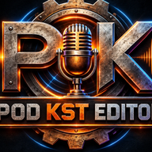
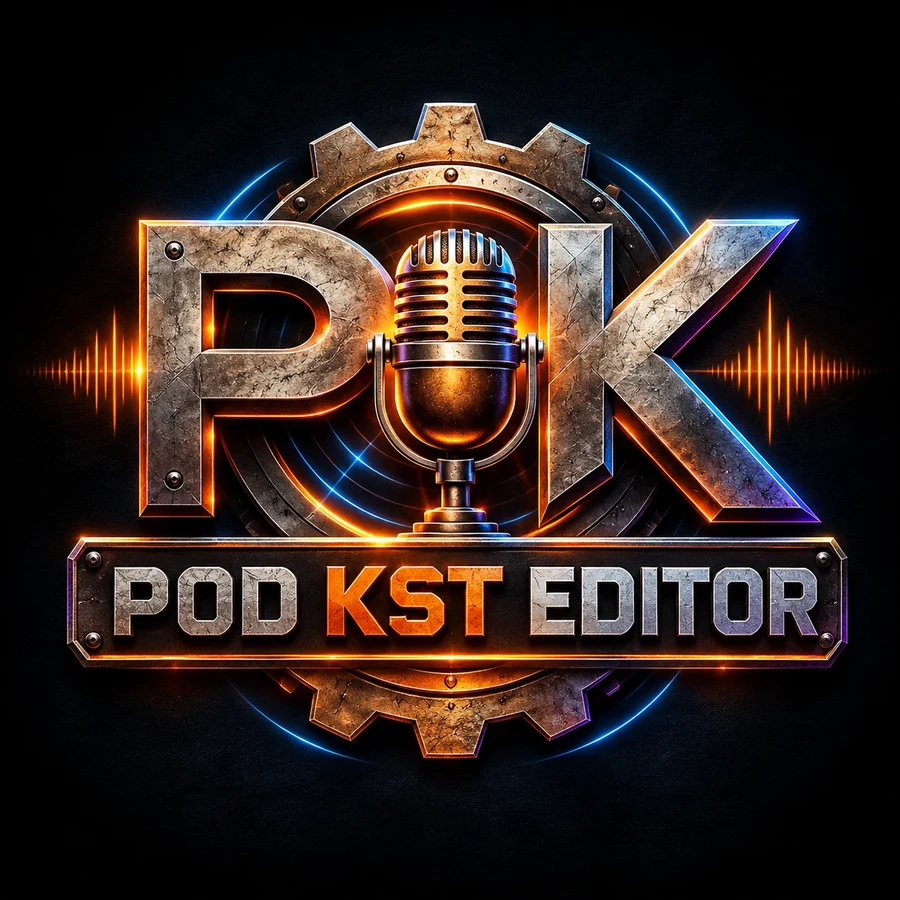

Sincronía por el sonido
Suelta los archivos de cada cámara y de cada micro. El editor los alinea solo escuchando el audio, y corrige la deriva en grabaciones largas. Sin claqueta.

POD KST EDITOR DescargarPod KST Editor sincroniza tus cámaras por el sonido, corta a quien habla en cada momento, arregla el audio y genera subtítulos, capítulos y Shorts. Tú solo retocas lo que quieras y exportas.

Esto es lo que hace con tu grabación, paso a paso. Pulsa un paso para ir a ese momento del vídeo.
Del material en bruto al vídeo publicado, sin saltar entre cinco programas.
Suelta los archivos de cada cámara y de cada micro. El editor los alinea solo escuchando el audio, y corrige la deriva en grabaciones largas. Sin claqueta.
Detecta quién habla y corta a su cámara. En silencios y cuando se pisan, plano general. Funciona con las cámaras y micros que tengas: una, tres o seis.
Si el audio principal tiene huecos o satura, coge el mejor trozo de otra fuente. «Voz clara» quita ruido y eco, y todo sale a −14 LUFS, el nivel de YouTube.
Transcribe en español y traduce a catalán, euskera, gallego e inglés. La traducción funciona sin internet. Un .srt por idioma, listo para subir.
Propone capítulos para la descripción, recorta Shorts verticales encuadrando la cara de quien habla y prepara la miniatura con el título.
Reproductor en tiempo real y línea de tiempo: pulsa 1, 2, 3 para cortar de cámara como en una mesa de realización, arrastra los cortes, deshaz y rehaz.
Intro, anuncios y outro, color con LUT, mosca con tu logo, rótulos con los nombres. Lo guardas como plantilla y cada episodio sale igual.
Sube el vídeo desde el editor con sus subtítulos y capítulos. Se publica como privado para que lo revises antes de que lo vea nadie.
Podcast, Edición, Efectos y Sonido. Los tres últimos se basan en los programas de ArtCraft y están conectados entre sí.
Arrastra los vídeos de las cámaras y los audios de los micros. Dile una vez qué equipo tienes y lo recuerda para el siguiente episodio.
El asistente sincroniza, decide los cortes, limpia el sonido, transcribe y te propone capítulos y momentos para Shorts. Tú revisas la propuesta.
Cambia un plano, mueve un corte, quita un trozo. Exporta con la tarjeta gráfica y súbelo a YouTube desde el propio editor.
Pod KST Editor tiene cuatro modos. Podcast es nuestro; Edición, Efectos y Sonido se basan en los programas de ArtCraft, software libre y totalmente gratuito, que vienen ya instalados y se abren dentro del editor.
Sincroniza las cámaras, corta a quien habla, trata el sonido y genera subtítulos, capítulos y Shorts. Es el punto de partida del episodio.
Editor de vídeo completo: montaje, color, sonido y títulos. Abre el montaje del podcast tal cual sale del modo Podcast.
Rótulos, intros animadas y cientos de efectos, diseñados sobre la imagen de tu episodio.
Estación de audio para mezclar las pistas de cada micro como en un estudio.
No son cuatro programas sueltos: los cuatro modos trabajan sobre el mismo episodio, dentro de la misma ventana, y lo que haces en uno llega a los demás.
ArtCraft es gratuito y aquí lo sigue siendo: no cobramos por ello ni pretendemos aprovecharnos del trabajo de nadie. Solo queremos darle al podcast una dimensión nueva de edición, uniendo lo que mejor hace nuestro editor (sincronizar, cortar a quien habla, subtítulos) con lo mejor de la edición de vídeo, los efectos y el sonido de ArtCraft.
FilmCraft, EffectCraft y SoundCraft son obra de ArtCraft, publicados con licencias MIT y Apache-2.0. Se incluyen sin modificar, desde sus publicaciones oficiales. Todo el mérito de esos programas es suyo. Conoce ArtCraft →
Pod KST Editor es gratuito. Sin planes, sin cuenta y sin límite de episodios. Un instalador para Windows con todo dentro; no hay que instalar nada más.
Sí. Se descarga y se usa completo, sin cuenta, sin suscripción y sin límite de episodios.
Un ordenador con Windows 10 u 11 de 64 bits y las grabaciones de tu podcast: los vídeos de las cámaras y, si los tienes, los audios de los micros. Con tarjeta gráfica exporta más rápido, pero no es obligatoria.
No. La sincronía, los cortes, el sonido, la transcripción y la traducción se hacen en tu ordenador. Solo sale algo si tú lo pides: al subir el vídeo a tu canal de YouTube.
Sí. Defines tu equipo una vez (las cámaras y micros que tengas y a quién graba cada uno) y el editor se adapta. Puedes guardar varios equipos.
Al abrirlo avisa si hay versión nueva y la instala él solo. Tus ajustes, plantillas y proyectos se conservan.
Escríbeme. Leo todos los mensajes: si algo no funciona con tu material o echas en falta una función, cuéntamelo y lo miro.